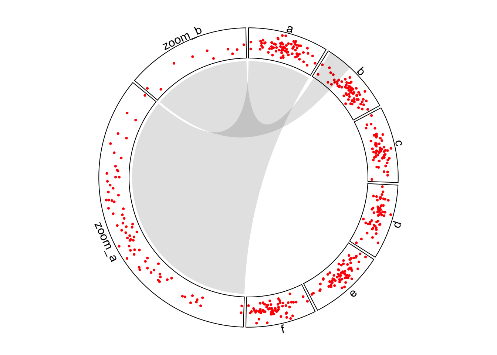
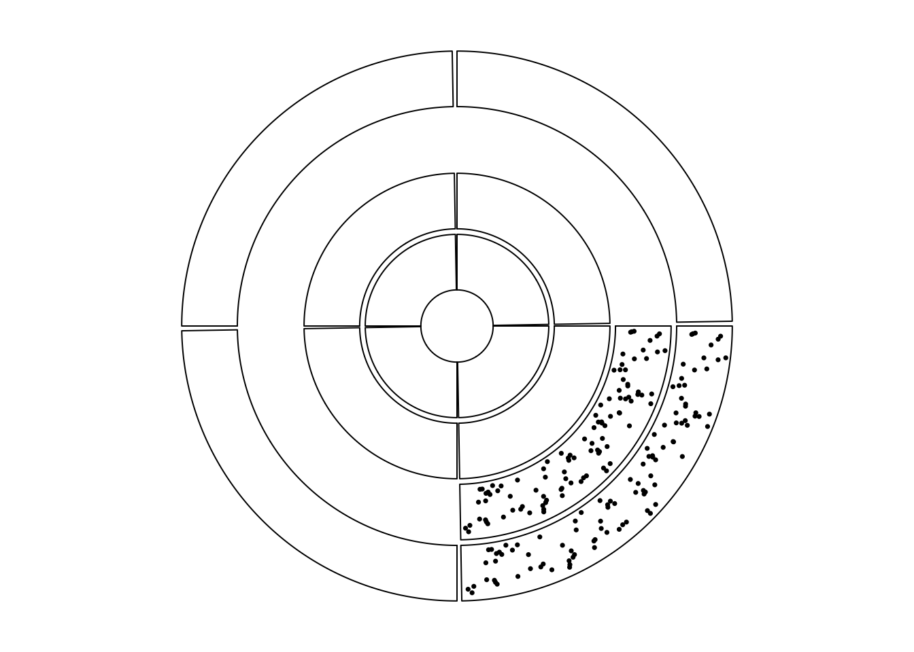
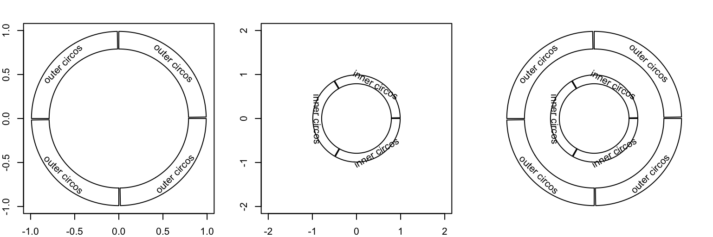
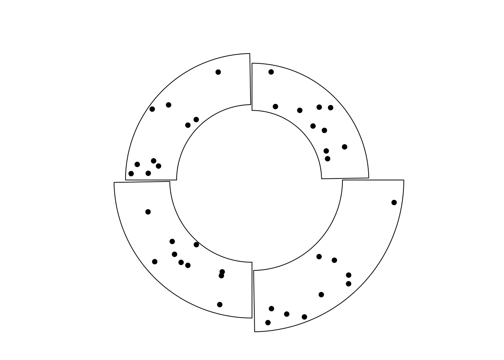
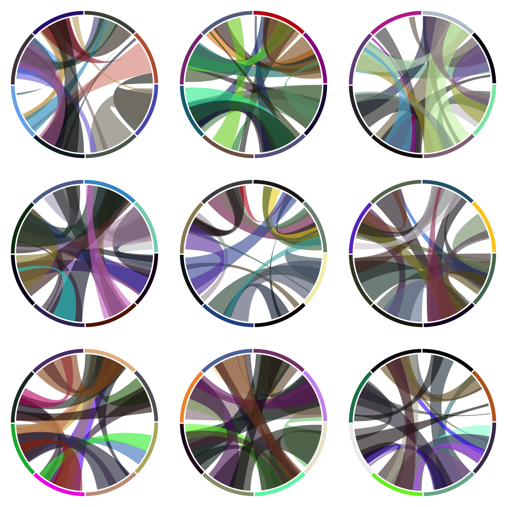

Advanced layout
Zooming of sectors
set.seed(123)
df = data.frame(
sectors = sample(letters[1:6], 400, replace = TRUE),
x = rnorm(400),
y = rnorm(400),
stringsAsFactors = FALSE
)
zoom_df_a = df[df$sectors == "a", ]
zoom_df_b = df[df$sectors == "b", ]
zoom_df_b = zoom_df_b[order(zoom_df_b[, 2])[1:10], ]
zoom_df = rbind(zoom_df_a, zoom_df_b)
zoom_df$sectors = paste0("zoom_", zoom_df$sectors)
df2 = rbind(df, zoom_df)
xrange = tapply(df2$x, df2$sectors, function(x) max(x) - min(x))
normal_sector_index = unique(df$sectors)
zoomed_sector_index = unique(zoom_df$sectors)
sector.width = c(xrange[normal_sector_index] / sum(xrange[normal_sector_index]),
xrange[zoomed_sector_index] / sum(xrange[zoomed_sector_index]))
sector.width
par1 = ccPar(start.degree = 90, points.overflow.warning = FALSE)
cc = ccPlot(sectors = df2$sectors, x = df2$x, sector.width = sector.width)
t1 = ccTrack(sectors = df2$sectors, x = df2$x, y = df2$y,
panel.fun = function(x, y) {
circos.points(x, y, col = "red", pch = 16, cex = 0.5)
circos.text(CELL_META$xcenter, CELL_META$cell.ylim[2] + mm_y(2),
CELL_META$sector.index, niceFacing = TRUE)
})
l1 = ccLink("a", get.cell.meta.data("cell.xlim", sector.index = "a"),
"zoom_a", get.cell.meta.data("cell.xlim", sector.index = "zoom_a"),
border = NA, col = "#00000020")
l2 = ccLink("b", c(zoom_df_b[1, 2], zoom_df_b[10, 2]),
"zoom_b", get.cell.meta.data("cell.xlim", sector.index = "zoom_b"),
rou1 = get.cell.meta.data("cell.top.radius", sector.index = "b"),
border = NA, col = "#00000020")
cc + par1 + t1 + l1 + l2
circos.clear()

Zoom sectors.
Visualize part of the circle
sectors = letters[1:4]
cc = ccPlot(sectors = sectors, xlim = c(0, 1))
# directly specify the subset of data
df = data.frame(sectors = rep("a", 100),
x = runif(100),
y = runif(100))
t1 = ccTrack(df$sectors, x = df$x, y = df$y,
panel.fun = function(x, y) {
circos.points(x, y, pch = 16, cex = 0.5)
})
# create empty track first then fill graphics in the cell
t2 = ccTrack(ylim = range(df$y), bg.border = NA)
cc + t1 + t2
circos.update(sector.index = "a", bg.border = "black")
circos.points(df$x, df$y, pch = 16, cex = 0.5)
circos.track(sectors = sectors, ylim = c(0, 1))
circos.track(sectors = sectors, ylim = c(0, 1))

(\#fig:circlize-part2)Show subset of cells in tracks.
circos.clear()
Combine multiple circular plots
sectors = letters[1:4]
cc = ccPlot(sectors = sectors, xlim = c(0, 1))
t1 = ccTrack(ylim = c(0, 1), panel.fun = function(x, y) {
circos.text(0.5, 0.5, "outer circos", niceFacing = TRUE)
})
cc + t1
circos.clear()
par(new = TRUE) # <- magic
par1 = ccPar("canvas.xlim" = c(-2, 2), "canvas.ylim" = c(-2, 2))
sectors = letters[1:3]
cc = ccPlot(sectors = sectors, xlim = c(0, 1))
t1 = ccTrack(ylim = c(0, 1), panel.fun = function(x, y) {
circos.text(0.5, 0.5, "inner circos", niceFacing = TRUE)
})
cc + t1
circos.clear()

Nested circular plots.
sectors = letters[1:4]
lim = c(1, 1.1, 1.2, 1.3)
for(i in 1:4) {
par1 = ccPar("canvas.xlim" = c(-lim[i], lim[i]),
"canvas.ylim" = c(-lim[i], lim[i]),
"track.height" = 0.4)
cc = ccPlot(sectors = sectors, xlim = c(0, 1))
t1 = ccTrack(ylim = c(0, 1), bg.border = NA)
show(cc + par1 + t1)
circos.update(sector.index = sectors[i], bg.border = "black")
circos.points(runif(10), runif(10), pch = 16)
circos.clear()
par(new = TRUE)
}
par(new = FALSE)

Cells with differnet radius.
Arrange multiple plots
layout(matrix(1:9, 3, 3))
for(i in 1:9) {
sectors = 1:8
par(mar = c(0.5, 0.5, 0.5, 0.5))
par1 = ccPar(cell.padding = c(0, 0, 0, 0))
cc = ccPlot(sectors = sectors, xlim = c(0, 1))
t1 = ccTrack(ylim = c(0, 1), track.height = 0.05,
bg.col = rand_color(8), bg.border = NA)
cc = cc + par1 + t1
for(i in 1:20) {
se = sample(1:8, 2)
l = ccLink(se[1], runif(2), se[2], runif(2),
col = rand_color(1, transparency = 0.4), border = NA)
cc = cc + l
}
show(cc)
circos.clear()
}

Arrange multiple circular plots.